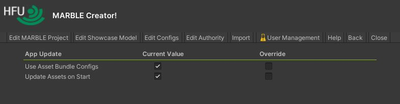
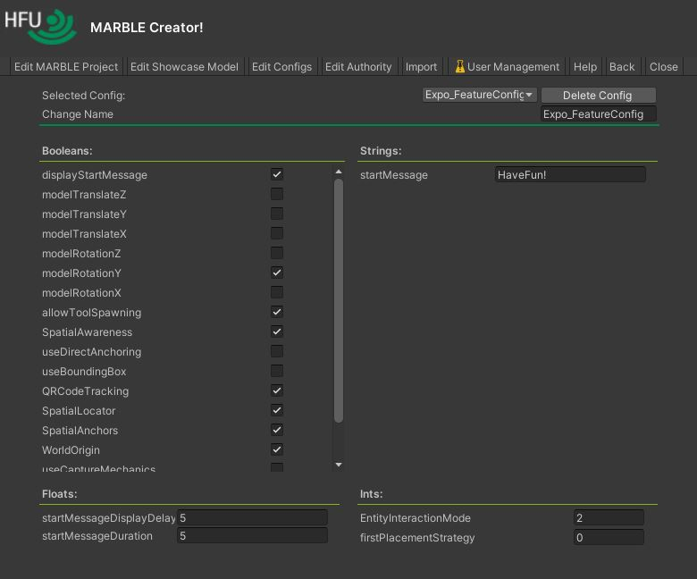

Configs & Effects
MARBLE stores most of its settings in configuration files. These files are not only necessary for the app itself, but also enable the configuration of functions for sessions, depending on their didactic goal. For example, one can remove all interactions from all clients to turn the MARBLE Player into a simple, one-way presentation tool. In combination with the authentication and authority mechanisms, one can configure a session so that only one or two people (e.g. the professor or tutor) can control the session and the models. If you would like to learn more about this, read Concept & Architecture.Quick Config Edit
The "Quick Config Edit" panel allows the user to quickly configure certain settings that overwrite the settings from the configuration files when exporting a MARBLE project. The "Quick Config Edit" panel is located under "Edit Configs > Quick Config Edit".
Session Configs
In the "Edit Session Config" area, the user can configure the session for the MARBLE project. The user can configure features such as menu items or define whether the model can be moved on a specific axis or not. In the "Selected Config:" drop-down menu, the user can select which configuration they want to change or delete. The four types of configs available are Boolean, String, Integer or Float. All four configurations to be changed are displayed in the main area of the "Edit Session Configs" panel.
Configs List
Italic configs are currently not implemented. Monospaced should not be changed.Main Config
| Identifier | Expected Behaviour |
|---|---|
| autospawn | Leave false - Don´t change |
| keepQRtrack | Leave false - Don´t change |
| useLibrary | Leave true - Don´t change |
| rotateMX | Moved to Feature Config. |
| rotateMY | Moved to Feature Config. |
| rotateMZ | Moved to Feature Config. |
| translateMX | Moved to Feature Config. |
| translateMY | Moved to Feature Config. |
| translateMZ | Moved to Feature Config. |
| showShadows | Leave true - Don´t change |
| autoSceneUnderstanding | Leave false - Don´t change |
| autoExpSceneStart | Leave false - Don´t change |
| useSceneMesh | Leave false - Don´t change |
| visualizeSceneMesh | Leave false - Don´t change |
| trackFloor | Leave false - Don´t change |
| useSceneObserving | Leave false - Don´t change |
| visualizeSceneObserving | Leave false - Don´t change |
| autoExecSceneUnderstanding | Leave false - Don´t change |
| autoTutorialStart | Determines whether the main menu should be skipped. It automatically loads the scene with the index in "tutSceneIndex. |
| Strings | |
| No strings. | |
| Integers | |
| EntityInteractionMode | Moved to Feature Config. |
| expSceneIndex | Don´t change - Index of the experience/ showcase scene |
| configMenuIndex | Don´t change - Index of the config scene |
| testsMenuIndex | Don´t change - Index of the test scene |
| tutSceneIndex | Don´t change - Index of the tutorial scene |
| authorityLevel | Don´t change |
| startTutIndex | Don´t change |
| mainMenuIndex | Don´t change - Index of the main menu scene |
| Floats | |
| floorTrackInterval | Don´t change |
Feature Config
| Identifier | Expected Behaviour |
|---|---|
| Bools | |
| displayStartMessage | If a message should be displayed when the app is started. |
| modelTranslateZ | If the main showcase model can be moved on the z axis. |
| modelTranslateY | If the main showcase model can be moved on the y axis. |
| modelTranslateX | If the main showcase model can be moved on the x axis. |
| modelRotationZ | If the main showcase model can be rotated around the z axis. |
| modelRotationY | If the main showcase model can be rotated around the y axis. |
| modelRotationX | If the main showcase model can be rotated around the x axis. |
| allowToolSpawning | If the user is allowed to spawn tools. |
| SpatialAwareness | If the spatial awareness system is enabled.Don´t change - enabled |
| useDirectAnchoring | If the app asks the client on start if the stored spatial anchor should be placed. Use this if you are sure that the user only executes the app in a known location. |
| useBoundingBox | Leave false - Don´t change |
| QRCodeTracking | Leave true - Don´t change |
| SpatialLocator | Leave true - Don´t change |
| SpatialAnchors | Leave true - Don´t change |
| WorldOrigin | Leave true - Don´t change |
| useCaptureMechanics | Leave true - Don´t change |
| useStates | Determines whether the user can change MARBLE states. |
| useLightManipulation | Determines whether the user can access the light manipulation feature. |
| Strings | |
| startMessage | The message displayed when "displayStartMessage" is enabled. |
| Integers | |
| EntityInteractionMode | Determines how the user can "grab" the main showcase model. 0 = Not at all, 1 = with one hand, 2 = with two hands, 3 = 1 & 2 |
| firstPlacementStrategy | Determines with which placement strategy the client starts. 0 = Anchors, 1 = QR Code, 2 = Pointer |
| Floats | |
| startMessageDisplayDelay | The delay until when the start message from "startMessage" is displayed, when "displayStartMessage" is enabled. |
| startMessageDuration | The duration the start message from "startMessage" is displayed, when "displayStartMessage" is enabled. |
Network Config
| Identifier | Expected Behaviour |
|---|---|
| Bools | |
| autoConnect | Determines whether the client connects automatically to the server. |
| reconnect | Determines whether the client reconnects when the connection is lost. If the connection was never established, this config will have no effect. |
| showcaseInterpolateScale | Don´t change |
| requestAnchor | Will request the stored spatial anchor from the server. Currently, not implemented. |
| requestConfigs | Requests and updates all configuration files regardless of the asset bundle. This allows a session to update data such as models without using the session's saved configurations. Currently, not implemented. |
| requestAssets | Requests the asset bundle to be used in the session. This results in a deadlock if the server is not running but the client requests the asset bundles. |
| updateIP | Determines whether the IP address of the asset bundle should be used as the server address. The IP address of the server is stored in the Configs. As the server address may change between the different uses of an asset bundle, the stored IP address in a bundle can be outdated. The server address can be changed locally in the "netconfig.txt". If this option is not enabled, the client uses its IP address from the local network configuration file. The recommended option is "disabled" ("0"). |
| updateConfigs | Determines whether to use the asset bundle configurations. If this option is disabled, the local configurations of the configuration files are not updated with the asset bundle configurations. This may result in a irreversible bypassing. See Irreversible Bypassing. The recommended option is "enabled" ("1"). |
| updateAssets | Determines whether the assets should be updated with the received asset bundle. Except for the Configs (which are controlled with "updateConfigs"), the asset bundle data will overwrite the locally stored data depending on this config. If "requestAssets" is disabled but "updateAsstes" is enabled, this means that the project will be updated with the first available asset bundle. If no asset bundle is available, the last used project is loaded (not asset bundle(!)). If this project is invalid, the default project is loaded ("Santa Maria de Melque"). |
| Strings | |
| ipv4 | IPv4 address of the server. Change this to connect to another server. |
| Integers | |
| kcpInterval | Leave 1 - Don´t change |
| serverTickRate | Leave 60 - Don´t change |
| Floats | |
| showcaseSyncInterval | Leave 0.007 - Don´t change |
| showcaseLocalPositionSensitivity | Leave 0.001 - Don´t change |
| showcaseLocalRotationSensitivity | Leave 0.001 - Don´t change |
| showcaseLocalScaleSensitivity | Leave 0.001 - Don´t change |
Pointer Config
| Identifier | Expected Behaviour |
|---|---|
| Bools | |
| visualizeWhenNotHitting | Determines if the marker is displayed when not, it does not hit an object. |
| visualizeMarker | Determines if the marker is visualized at all. |
| Strings | |
| No strings. | |
| Integers | |
| intersectionRotationType | Determines how the marker is oriented on the surface of the model. 0 = World up; 1 = Object up; 2 = Towards the caster; 3 = Surface up; 4 = As Cursor. The recommended option is "4" ("As Cursor"). |
| visualizationMethod | Determines how the marker is displayed when it does not hit an object. 0 = Last position; 1 = Fixed distance. The recommended option is "1" ("Fixed distance"). |
| Floats | |
| maxDistance | Determines at which distance the marker is displayed when it does not hit an object and "visualizedMethod" is set to "Fixed distance" ("1) |
Study Config
| Identifier | Expected Behaviour |
|---|---|
| Bools | |
| adaptUndercut | Determines whether the "userAmountToStart" should be adapted to the amount of users surpassing the threshold to start the study, e.g. if 6 clients joined but the "userAmountToStart" is 2, the "userAmountToStart" is also risen to 6. |
| pauseUserCountNotMatch | Determines whether the study timer should pause if the user count undercuts the "userAmountToStart", e.g. if a user disconnects. |
| useTimer | If a timer should be started if the "userAmountToStart" value is reached. |
| Strings | |
| userAmountToStart | How many users are allowed to connect before the study timer starts |
| Integers | |
| userAmountToStart | How many users are allowed to connect before the study timer starts. Notice: The server counts as one. |
| Floats | |
| studyDuration | How long the study lasts before the message is displayed. In seconds. |
| endMSgDisplayDuration | How long the study message is displayed. In seconds. |